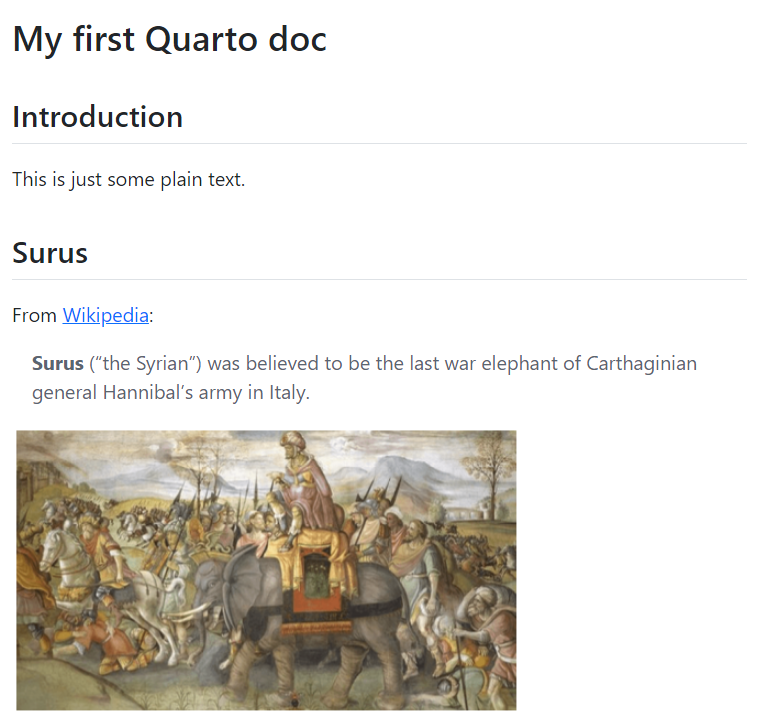

Your First Quarto Document
Overview
Quarto is a publishing system used to create documents in a wide variety of formats including HTML, PDF, Office (docx and pptx), OpenOffice, JATS, and many more.
You author these documents using markdown, an easy to write plain-text format. You then optionally add code (e.g. Python, R, JavaScript, etc.) to the documents to dynamically create figures, tables, etc. and then render the documents to their final format using Quarto.
Markdown Inputs
There are three types of markdown input files that Quarto can render:
Plain markdown (with no embedded code)
Markdown with embedded code chunks
Jupyter notebooks which have a combination of markdown and code cells
R users will typically use the second approach (in fact, existing .Rmd files can be rendered directly with Quarto).
Jupyter users will user either the second or third approach, depending on whether they prefer to work in a text editor or in the standard notebook user interface.
Now that you’re familiar with the structure of a Quarto document, we’re going to create our first Quarto document. We’ll start with a plain Markdown document so that we can get the hang of Quarto, but we’ll build up in complexity from there.
Setting Up
Before we start, you should spend some time to set up a Quarto development environment by referring to the Code Editors section. There are guides for setting up Jupyter Lab, RStudio, VS Code, and plain-text editors such as Vim or Sublime.
You may also be interested in using the Visual Editor in RStudio, which provides a WYSIWYM for all of Pandoc Markdown.
Creating and Previewing Your First Document
Once you have your editing environment set up, create a document called first_quarto.qmd and add the following text to it:
---
title: My first Quarto doc
---
## Introduction
This is some plain text.Let’s set up a live preview of the document. If you’re using the preview release version of RStudio, you can click the Render on Save button to render a live preview of this document. Otherwise, enter quarto render first_quarto.qmd in a command prompt and Quarto will serve a rendered version of the document in a new browser window. In either case, the result will look something like this:

If you are using JupyterLab, the document should be called first_quarto.ipynb and the yaml front matter at the top of the document should go into its own Raw cell. See the docs on YAML Front Matter in Jupyter Lab for more info.
Congratulations! You created and served your first Quarto document. Let’s add some more text to this document:
---
title: My first Quarto doc
---
## Introduction
This is some plain text.
## Surus
From [Wikipedia](https://en.wikipedia.org/wiki/Surus):
> **Surus** ("the Syrian") was believed to be the last war elephant of Carthaginian general Hannibal's army in Italy.Save the document and watch as Quarto updates the page preview. Your output should look like this:

If the Markdown used in these previous examples is new to you, we suggest referencing the Markdown Basics section to familiarize yourself with the syntax.
The Quarto Workflow
What we’ve just done is an example of the basic Quarto workflow for single documents without code:
- Start a live preview of the document with either
quarto preview <file_name>(on the command line) or Render on Save (in the preview version of R Studio) - Make changes to the document
- Check the preview
- Repeat the previous two steps until you’re ready to render the document.
Seeing the rendered document early and often helps you catch formatting mistakes early on and cuts down on debugging time. For example, let’s add an image of Surus to our document. Save this image to the same directory as first_quarto.qmd and add the following link to your document and save it:
{kind=link}
---
title: My first Quarto doc
---
## Introduction
This is some plain text.
## Surus
From [Wikipedia](https://en.wikipedia.org/wiki/Surus):
> **Surus** ("the Syrian") was believed to be the last war elephant of Carthaginian general Hannibal's army in Italy.
{fig-alt="A painting of Surus."}The output will look something like:

Uh oh! Our image didn’t render because we mispelled the file name. Since we have our live preview running, we were able to catch this error early on in our writing process rather than at the end when debugging might be more difficult. In fact, you’ll have caught it even sooner if you’re using the Visual Editor or the preview version of RStudio as those two writing environments will let you know that the image path doesn’t exist when you finish typing on the line.
Correcting the type in the image path and saving will get the document to render correctly:
---
title: My first Quarto doc
---
## Introduction
This is some plain text.
## Surus
From [Wikipedia](https://en.wikipedia.org/wiki/Surus):
> **Surus** ("the Syrian") was believed to be the last war elephant of Carthaginian general Hannibal's army in Italy.
{fig-alt="A painting of Surus."}
quarto preview vs. quarto serve
So far, we’ve been using quarto preview on a single document. Later on, you’ll learn about Quarto projects, collections of documents within a directory, such as a site or a book. quarto preview won’t render a document that is part of a project. However, you can get the same behavior as quarto preview for a project by calling quarto serve, which will create a preview for the entire project.
Up Next
Now that we have some experience working with a Quarto document, we’ll learn how to render a Quarto document to different output formats.